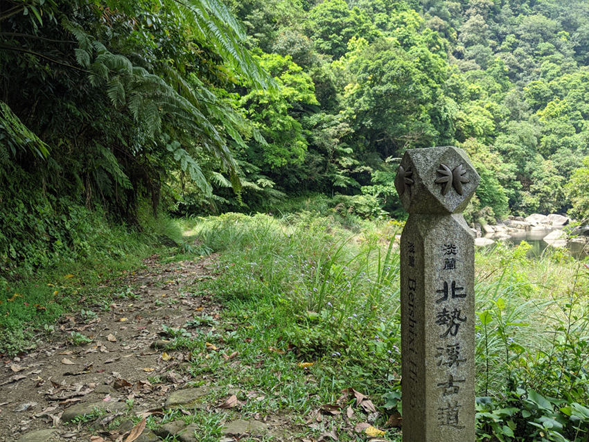
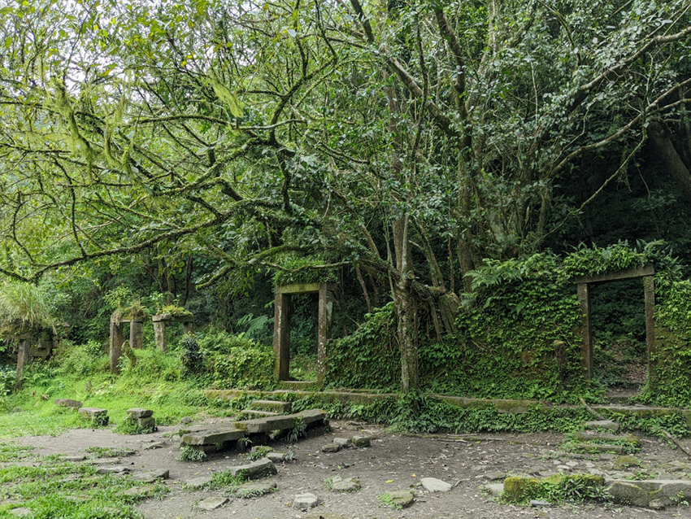
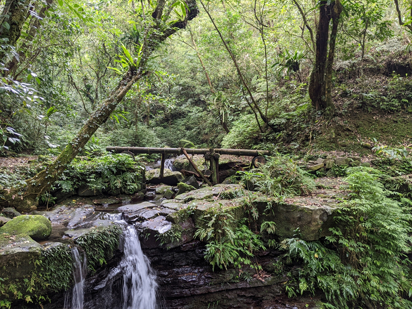

|
| 蜿蜒在雙溪山區之間的淡蘭中路，是充滿先民開拓故事的古道。 |
對於雙溪，排定在世界地球日（每年4月23日）期間的這趟小旅行之前，只有騎著公路車到福隆東北角一帶時，印象曾掠過這個有火車經過的小鎮。後來隨著「淡蘭古道」的名氣愈來愈響亮，才又開始注意到她。
淡蘭古道的健行熱，來自於官方大力行銷推廣這條「國家綠道」。根據官方資料稱作「淡蘭百年山徑」的步道網，分為「北路」、「中路」、「南路」三個系統，涵蓋清代以來先民往返台北盆地周邊與蘭陽平原之間的「道路」。雖然稱為「道路」，但祖先們只有「11號公車」可以翻越這之間的崇山峻嶺。因此，一兩百年前人們徒步通行的道路，少數留存至今仍未開成馬路的，也就成了我們當代的「古道（步道）」。換句話說，「淡蘭古道」不只一條步道，其中還有不少公路。
稍微惡補了淡蘭古道的背景後，攤開北台灣地圖還會發現雙溪地理位置的重要性。想像自己成為一位19世紀初的商人，準備從艋舺（現在的萬華）前往五圍（現在的宜蘭市）做生意。沒有雪隧與台9線，沿著東北角海岸太過繞路不合成本，途經已有聚落的雙溪地區，成為翻過雪山尾稜、進入蘭陽平原的最佳路線。
相較從大里到瑞芳的北路、礁溪到深坑的南路，這條先民從暖暖經過雙溪抵達外澳的最佳路線介於中間，故稱作中路。生在現代幸運的我們不用從萬華一步一步走到宜蘭，可以搭乘火車直接前往雙溪，找間舒適宜人的民宿住一晚，隔天便可好整以暇地出發！
為了充分體驗這條古道，我和旅伴規劃，世界地球日一早便搭乘雙溪社區前往灣潭的社區巴士，打算一口氣走完灣潭古道、北勢溪古道與崩山坑古道回到雙溪。參考官方路線資訊，三條古道加起來總里程約17.8公里，預估7-8小時。
 |
| 踏進灣潭古道便為樹上滿滿的鳥巢蕨所驚艷。 |
抵達灣潭土地公後，旅伴簡單向土地公合十祝禱希望今天旅程一路順暢後便出發。才剛走進古道沒多遠就為高聳大樹上的「鳥巢蕨」所驚艷！山蘇雖有鳥巢之名，但並不是真的有小鳥棲息，只是外觀與鳥巢相仿。不過攀附在樹幹上一叢又一叢的巨大山蘇，確實很像鳥巢型集合式住宅，裡頭住著許多小小生物～。
說到蕨類，不能不提淡蘭古道的指標，正是以極為特別的「雙扇蕨」當作代表意象。根據淡蘭古道官方網站的介紹，雙扇蕨是保持著侏儸紀時代的特徵型態存活至今。曾經南極到北極都看得到的雙扇蕨，因為喜歡空曠但相對濕度高的環境，目前只侷限在東南亞，並以台灣北部、石垣島一帶為分布北界。
|  |
| 北勢溪古道的起點官方設立的石柱指標，指標上的植物就是雙扇蕨。 |
因為這種地域特殊性，讓雙扇蕨能在「蕨類王國」的台灣脫穎而出，成為淡蘭的重要意象，也是來走淡蘭古道時不能錯過的步道亮點～。
 |
| 小時候的雙扇蕨毛茸茸超可愛。 |
此行除了遇見幼年期超可愛的雙扇蕨，還在泰平社區發現不是到處可見的「岩壁草莓」，一掃沒能趕上吃一頓阿丹姐無菜單料理的失望。旅伴開玩笑說是岩壁草莓的其實是一種食蟲植物「小毛氈苔」。葉片上嬌豔欲滴的紅色腺毛，是她用來吸引、分解、吸收昆蟲的器官。因為生活在相對缺乏營養的環境（例如岩壁），讓食蟲植物能演化出與其他植物截然不同的習性，但也因為生長環境的特殊性，使得食蟲植物不是那麼常見。
 |
| 岩壁上一點一點紅色彷彿草莓的食蟲植物小毛氈苔。 |
行程的尾聲即將返抵柑腳。途中經過一幢頹圮的石頭厝，規模雖不如隔天我們在中坑古道所見的那麼大，但仔細想想，先民們能在過去物資拮据、充滿不確定性的自然環境中，淬煉出即便置於當代仍極為驚人的生活智慧：在沒有設計圖的情況下，祖先竟能運用當地的石頭，建出世代安身立命的居所。
 |
| 崩山坑古道上的石頭古厝牆垣如昔。 |
|  |
| 中坑古道上規模碩大的石頭古厝。 |
久無人居的石頭厝歷經風霜，為數百年來努力生計的身影留下一頁記憶，如今與百萬年的雙扇蕨，貧瘠中成長的小毛氈苔，構成走過淡蘭最美的風景。
 |
| 在古道上悠閒地找處小溪畔，用登山爐頭煮茶午餐休息很愜意。 |
|  |
| 簡易輕巧的木橋，在古道上幫助我們跨過溪溝，與環境也相當融洽。 |
| 崩山坑古道上就地取材做的排水設施，讓古道仍有古道的風味。 |